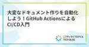

ニフティライフスタイル Tech Blog
https://tech.niftylifestyle.co.jp
ニフティライフスタイルを支えるエンジニア達が、日々の業務や自己研鑽から得られたノウハウや技術的な知見などについてお伝えしていきます。…
フィード

大変なドキュメント作りを自動化しよう！GitHub ActionsによるCI/CD入門 1
1
ニフティライフスタイル Tech Blog
こんにちは！普段は、ニフティ温泉のサービス開発全般を行なっているSoraY677です。 日々の開発で、運用作業の肥大化や管理しているナレッジの属人化は、チームにとって大きな課題であると言えます。特にシステム構成図などを最 […]
11日前

Kotlin Fest 2024に参加してきました！
ニフティライフスタイル Tech Blog
はじめに 「ニフティ不動産」アプリのAndroid版の開発を担当している、TS-Elfenです。Kotlin Fest 2024は、「Kotlinを愛でる」をビジョンにした、Kotlinファンの交流の場を提供する技術カン […]
1ヶ月前
AWS Lambda (Node.js) でのHTTPリクエストをAxiosからFetch APIに移行する
ニフティライフスタイル Tech Blog
こんにちは。システム開発部のkiwiです。 AWS LambdaのNode.js 16ランタイムのサポート終了が2024年6月12日と迫ってきました（公式ドキュメント）。弊社でも対象の関数についてNode.js 18以上 […]
2ヶ月前
長期間の育休前後にやったこととその振り返り
ニフティライフスタイル Tech Blog
こんにちは。システム開発部のkiwiです。 私ごとですが、今年の4月中旬まで約1年半にわたる育児休業を取得していました。開発部に復職した現在は、ワーパパとして育児に仕事にと忙しい毎日を過ごしています。 この記事では、育休 […]
2ヶ月前
スナップショットから復元したAurora MySQLをCloudFormation管理下に加える＆外す方法
ニフティライフスタイル Tech Blog
こんにちは。システム開発部のsonohaです。ニフティ温泉のWEBサイトの開発全般を担当しています。 先日、AWSのAurora MySQLをスナップショットから復元する機会がありました。スナップショットからDBを復元す […]
4ヶ月前
try! Swift Tokyo 2024 に参加してきました！
ニフティライフスタイル Tech Blog
こんにちは！ニフティライフスタイルでモバイルアプリの開発をしているsaikeiです！2024/3/22(金) ~ 24(日) にベルサール渋谷ファーストで開催された「try! Swift Tokyo 2024」に初めて参加してきました。今回は、参加した感想や一部セッションについてご紹介させていただきます。
4ヶ月前
社内で色覚ワークショップを開催した話
ニフティライフスタイル Tech Blog
この記事は「ニフティグループ Advent Calendar 2023」 24日目の記事です。 はじめに こんにちは！ニフティライフスタイル株式会社で「ニフティ不動産」賃貸物件検索アプリの企画をしているnokiyu_oO […]
8ヶ月前
iOSアプリのマスタデータ管理にRealmを採用したので紹介します！
ニフティライフスタイル Tech Blog
この記事は「ニフティグループ Advent Calendar 2023」 23日目の記事です。 こんにちは！ニフティライフスタイルでモバイルアプリの開発をしているsaikeiです。 今回は、iOSアプリのマスタデータをR […]
8ヶ月前
RDB脳からNoSQL脳に切り替える非正規化の思想
ニフティライフスタイル Tech Blog
この記事は、ニフティグループ Advent Calendar 2023 16日目の記事です。 こんにちは。システム開発部のsonohaです。ニフティ温泉のWEBサイトの開発全般を担当しています。 普段はデータベースとして […]
8ヶ月前
iOSアプリ「ニフティ不動産 賃貸版」に swift-dependencies を導入しました
ニフティライフスタイル Tech Blog
この記事は「ニフティグループ Advent Calendar 2023」 21日目の記事です。 はじめに こんにちは。ニフティライフスタイルでモバイルアプリの開発をしているt-toshasegawです。 テストコードを書 […]
8ヶ月前